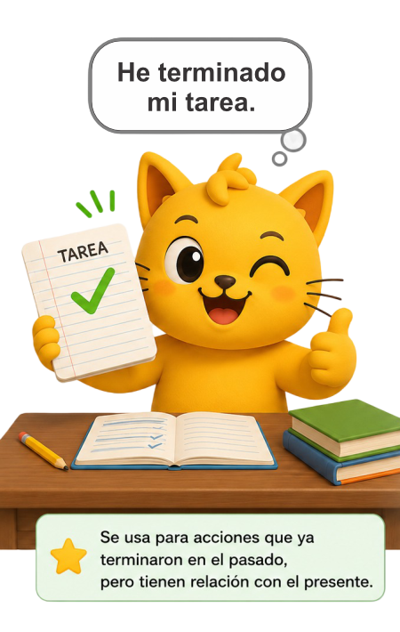
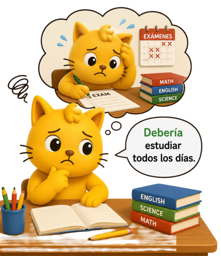
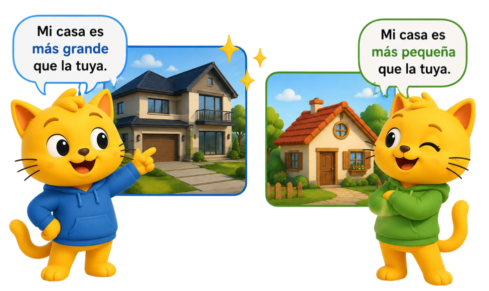
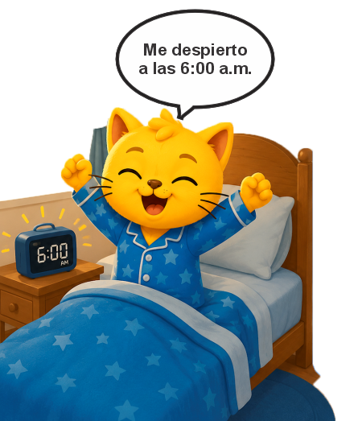

Se usa para hablar de acciones que ocurrieron en el pasado
Visited = "Visité"
Ejemplo:
I visited my grandmother last weekend = Visite a mi abuela el fin de semana pasado
Se usa para hablar de experiencias o acciones que ya se completaron.
Have finished = "He terminado"
Ejemplo:
I have finished my homework.
"He terminado mi tarea."

Se usa para dar consejos o recomendaciones.
Should = "Debería"
Ejemplo: You should study every day.
"Deberías estudiar todos los días."

Se usa para comparar dos cosas.
Bigger = "Más grande"
Ejemplo: My house is bigger than yours.
"Mi casa es más grande que la tuya."

Es una combinación de verbo y preposición que tiene un significado específico.
Wake up = "Despertarse"
Ejemplo: I wake up at 6:00 a.m.
"Me despierto a las 6:00 a.m."
